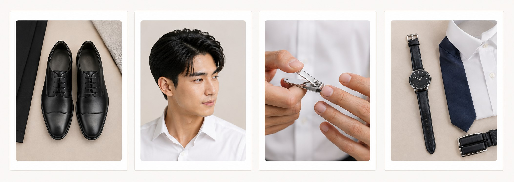

淡妆对男生形象照其实有实质帮助，而且完全看不出化过妆。Light makeup can genuinely improve a men's headshot — and it looks completely natural.

如果这张形象照会用在重要的商业场合，例如品牌代言、演讲活动或大型企业官网，可以考虑加入基础造型（发型整理、简单修容），让整体呈现更完整。If the headshot will be used for something high-stakes — brand representation, speaking events, or a major corporate website — consider adding basic styling (hair, light contouring) for a more complete look.
立即预约你的形象照拍摄，为自己留下最有自信的一面。Book your headshot session today and capture your most confident self.